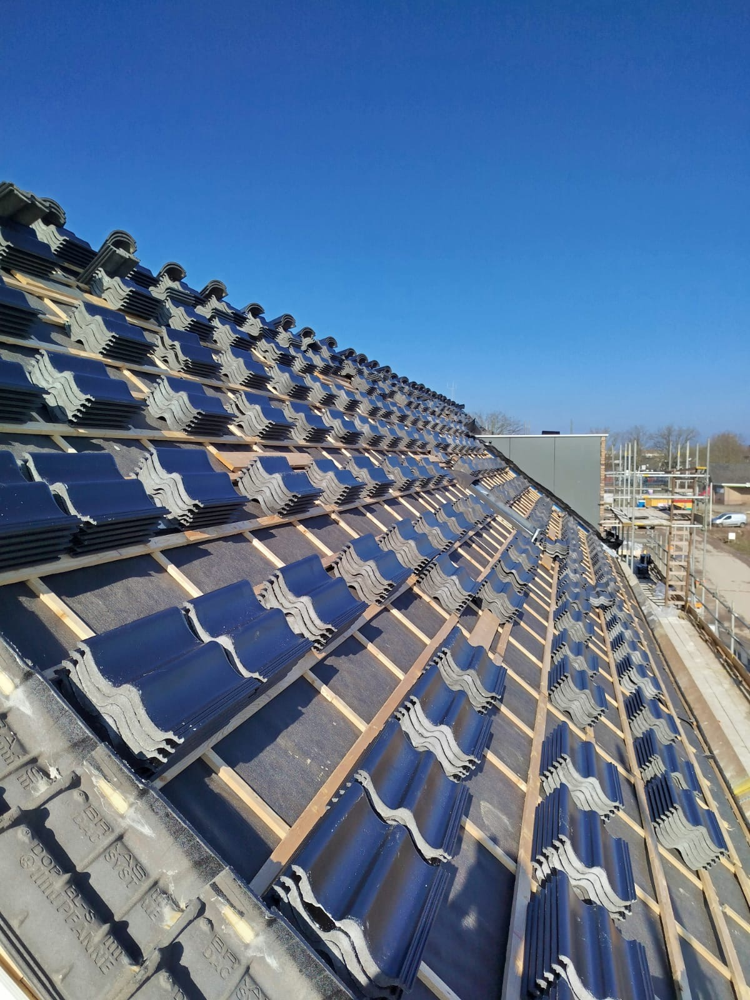
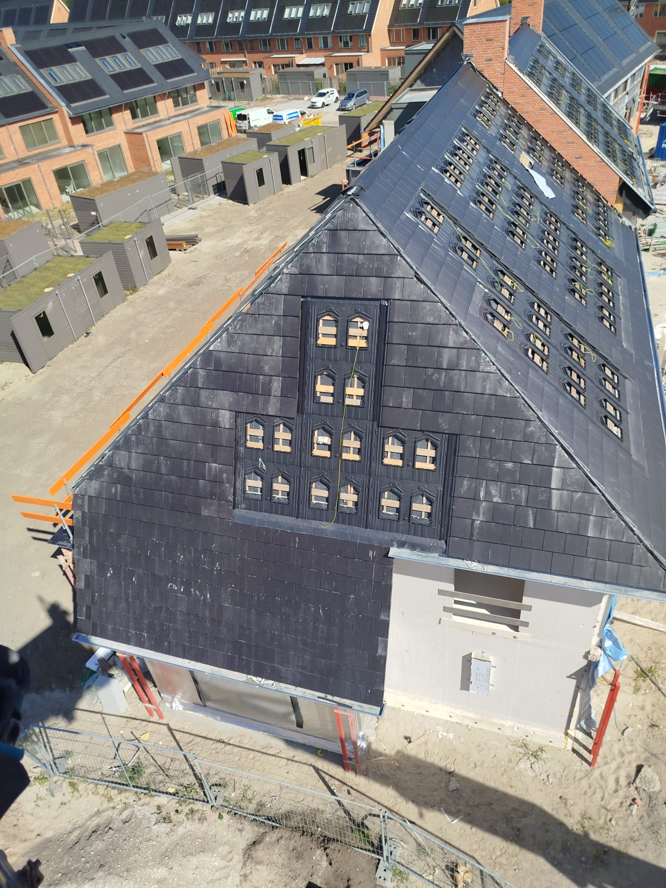
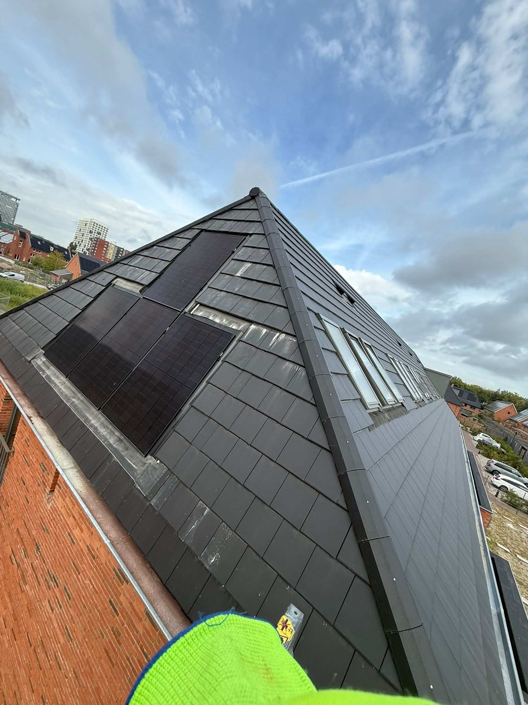
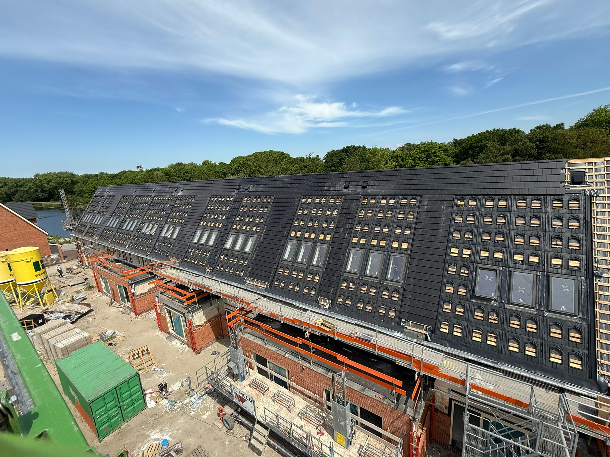
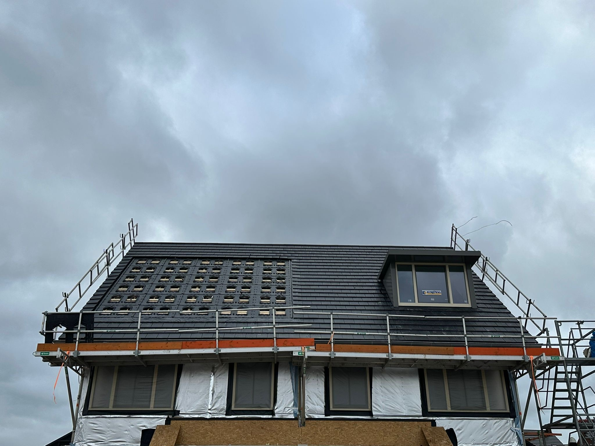
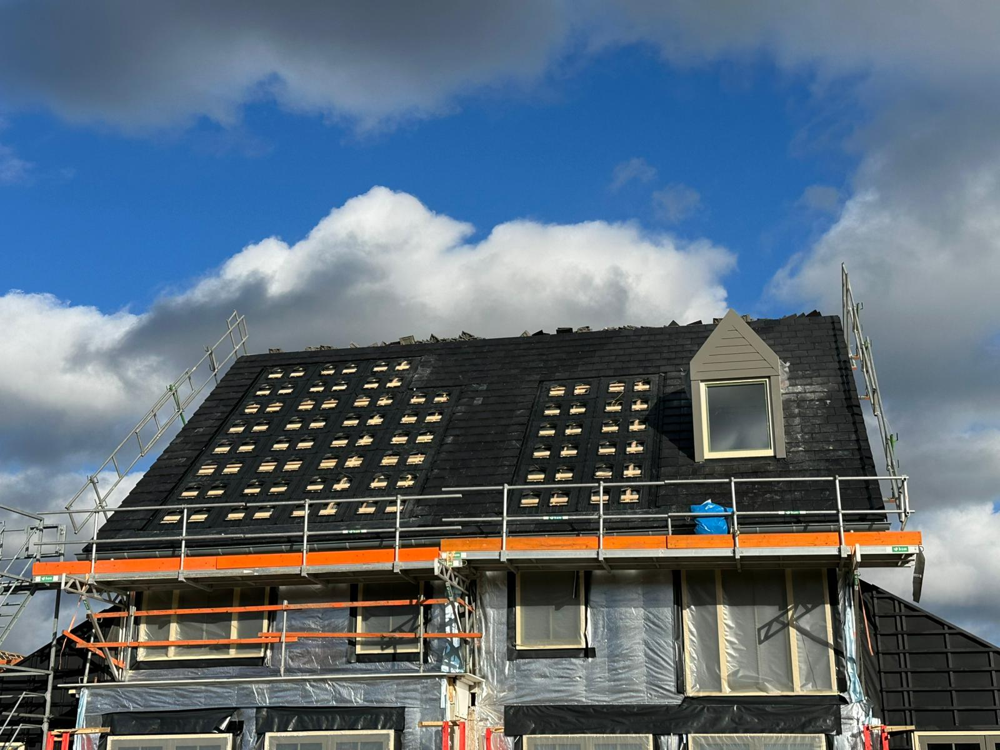

Betrouwbare dakdiensten in Nederland. Snelle service, hoge kwaliteit en eerlijke prijzen.
Reparatie van lekkages en beschadigde daken.
Installatie van nieuwe dakbedekking.
Bescherming tegen regen en vocht.
Installatie en reparatie van dakpannen en bitumen.






📞 +31 6 20 81 38 28
📧 marekjerzypolak@gmail.com
📍 Burgemeester Stulemeijerlaan 2, 3118 BJ Schiedam